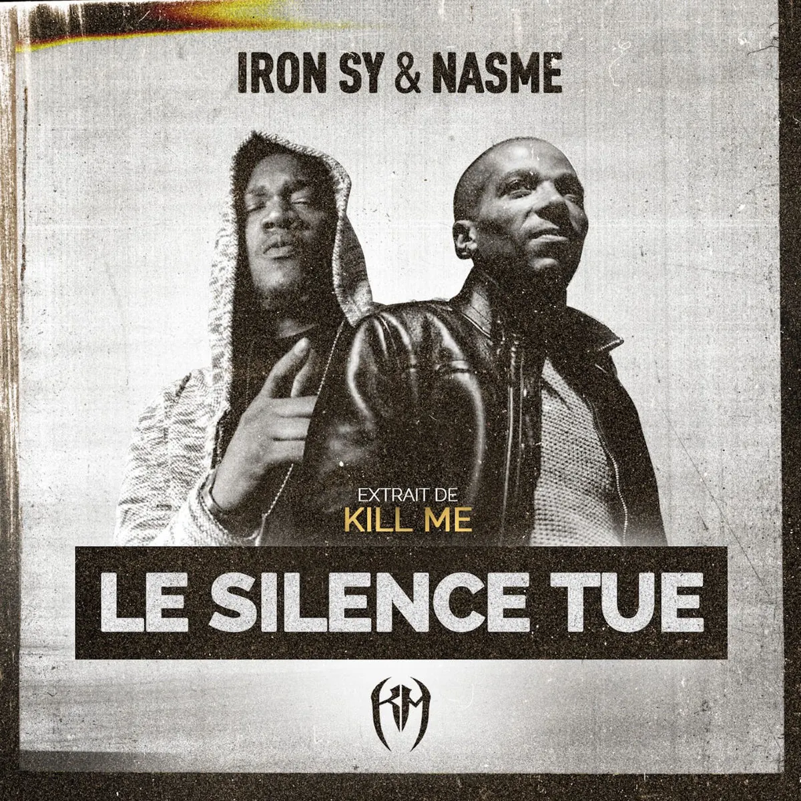

Publié le 4 novembre 2026

Le rappeur parisien Nasme sort son tout premier album solo, intitulé En bonne et due forme, le 6 novembre 2026. Le projet sort sur le label Misère Record avec une campagne de précommande Ulule.
Actif depuis plus de vingt ans dans la musique indépendante, le kickeur du 18e arrondissement n'avait encore jamais sorti de long-format en son nom propre. Il avait pourtant marqué la scène dès 2003 sur le morceau Le Code de la rue aux côtés d'Ali et Hi-Fi.
L'attente a été longue, mais ce choix de temporalité respecte la méthode de l'artiste. Nasme prend le temps d'écrire ses textes sans céder aux exigences des plateformes de streaming.
Pourquoi cet album de Nasme arrive-t-il après vingt ans de carrière ?
Nasme privilégie la constance du travail artisanal plutôt que la course aux chiffres. Depuis ses débuts avec le collectif Trouble-Fêtes, l'artiste parisien a construit son parcours à travers des apparitions ciblées et des featurings marquants.
Il a préféré affiner sa plume au fil des projets collectifs et des scènes locales. Ce premier album solo concrétise cette démarche sans compromis commercial. L'artiste gère sa production en indépendance avec ses partenaires habituels.
Le projet s'inscrit dans une exigence de rime technique et de son boom bap traditionnel. Il rejoint la démarche observée chez d'autres figures de la scène française qui défendent l'artisanat du rap indépendant.
Quelles sont les modalités de sortie de l'album En bonne et due forme ?
L'album En bonne et due forme sort le 6 novembre 2026 sur les plateformes de streaming. La production musicale est assurée par le beatmaker Mizr pour le label Misère Record.
Pour soutenir la fabrication des supports physiques, l'équipe a ouvert une campagne de précommande Ulule. Les auditeurs peuvent réserver le projet au format CD, en disque vinyle ou en pack digital.
Cette méthode de financement participatif garantit l'autonomie financière du projet. Elle permet aussi de mesurer l'engagement direct du public qui suit le rappeur depuis ses débuts.
| Critère | Détail officiel |
|---|---|
| Artiste principal | Nasme |
| Titre de l'album | En bonne et due forme |
| Date de sortie officielle | 6 novembre 2026 |
| Label producteur | Misère Record (Mizr) |
| Formats disponibles | Digital, CD, Vinyle |
Nasme prépare également la défense de ses nouveaux morceaux sur scène. Les amateurs de rap parisien peuvent suivre les dates à venir dans notre agenda des concerts rap à Paris. Cette sortie montre qu'une carrière solide se construit sur la durée.